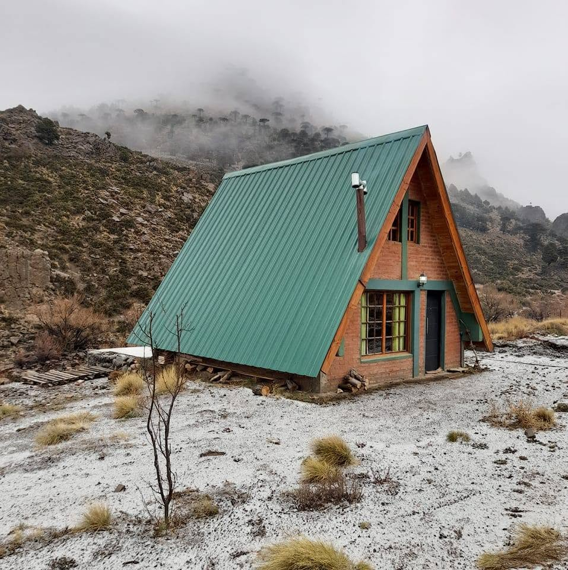
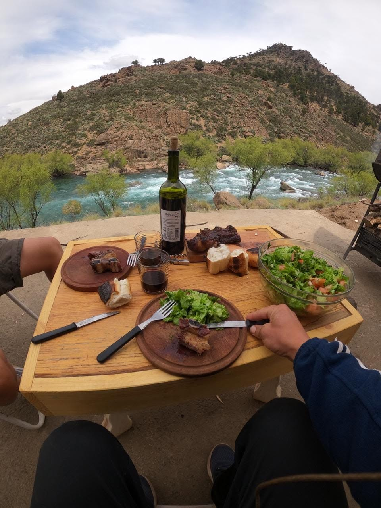
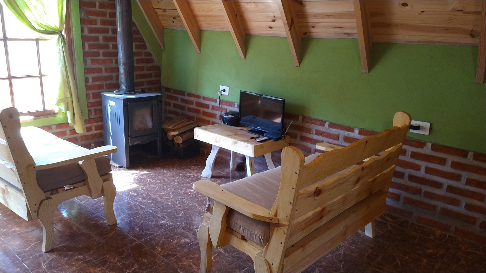
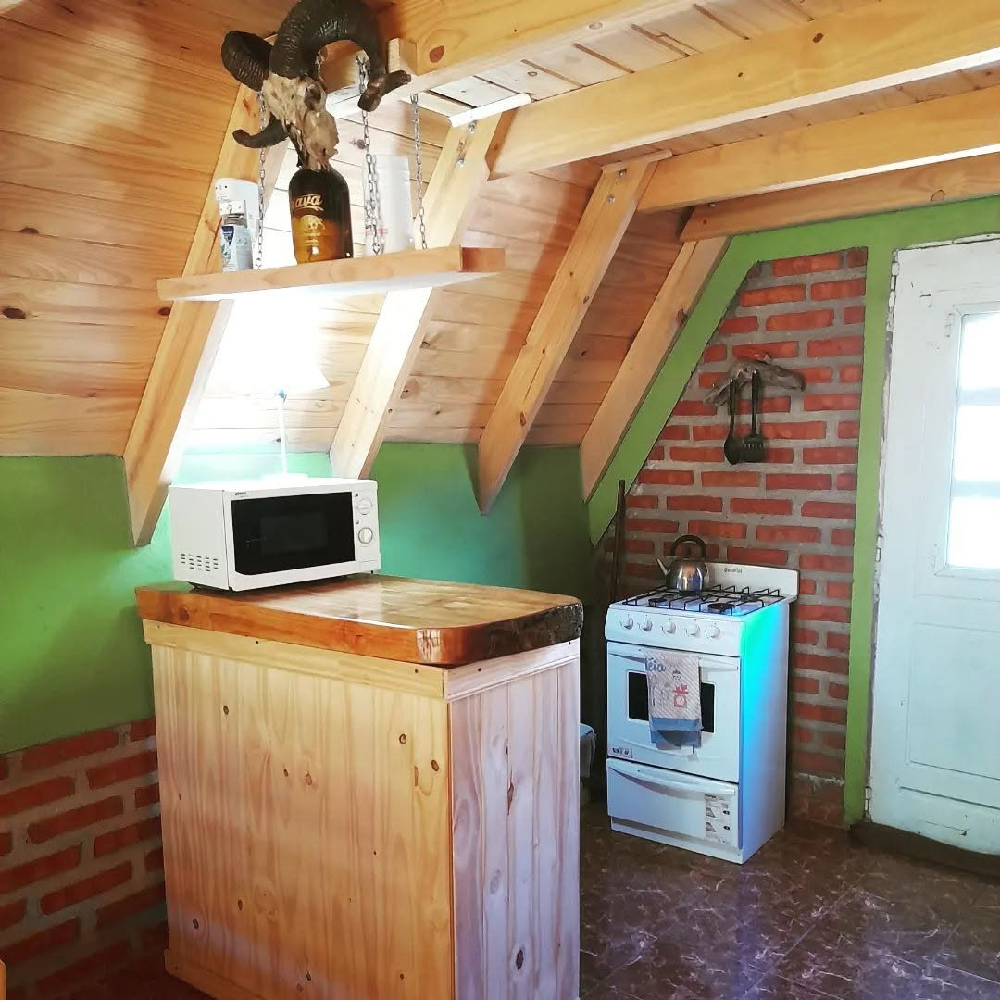
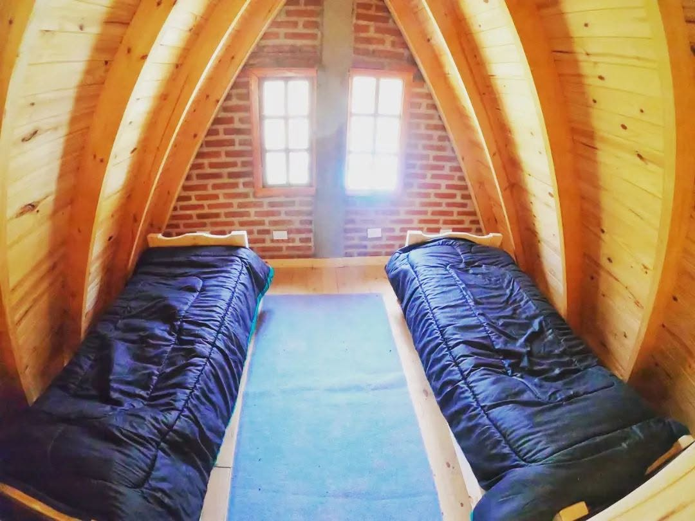
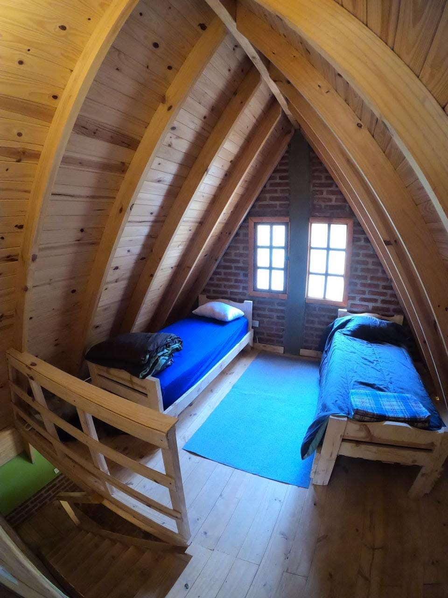
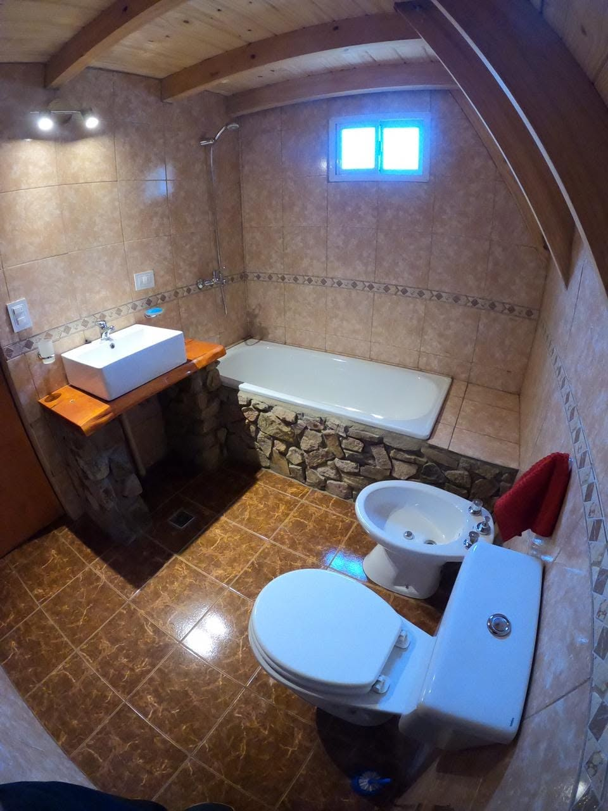

Lonco Luan, una mañana de escarcha
La cabaña
Chapa verde, ladrillo y pino.
Una cabaña de montaña a dos aguas, pensada para descansar entre salida y salida al río. Abajo, el estar con estufa a leña, la cocina y el baño. Arriba, bajo el techo de madera, el altillo.
Afuera no hay mucho más: el cerro con araucarias, el ruido del agua y el cielo de la cordillera.
- Estufa a leña en el estar Planta baja
- Cocina con horno y microondas Planta baja
- Baño con bañera Planta baja
- Altillo con dos camas Planta alta
Temporada de pesca con mosca
Salís de la cabaña y estás en el río.
El Paso del Cóndor funciona como refugio para pescadores: abre cada año el 1 de noviembre y cierra cuando termina la temporada de pesca.
Entre una jornada y otra, el Aluminé corre turquesa entre las piedras, y la mesa se arma afuera, frente al agua.
- Apertura
- 1 de noviembre
- Río
- Aluminé
- Modalidad
- Pesca con mosca
- Acceso
- Ruta Prov. 23

Adentro
Madera, ladrillo y fuego.
Muebles de pino hechos a mano, paredes de ladrillo visto y la salamandra siempre a mano para las noches frías de la cordillera.





Cómo llegar
Paraje Lonco Luan, Neuquén.
La cabaña está sobre la Ruta Provincial N° 23, en el paraje Lonco Luan, entre Aluminé y Villa Pehuenia, a orillas del río Aluminé.
Ruta Provincial 23
- AluminéPueblo
- El Paso del CóndorParaje Lonco Luan · río Aluminé
- Villa PehueniaPueblo
Reservas
Guardá tu lugar para la temporada.
Contanos quiénes vienen y en qué fechas. La consulta llega directo por WhatsApp y te respondemos con disponibilidad.
O escribinos al +54 2942 64-7215
Diseño web
Este boceto lo diseñó Teo Cicciari
¿Tenés un hospedaje y querés un sitio así, hecho a medida y pensado para recibir reservas? Pedí el tuyo.